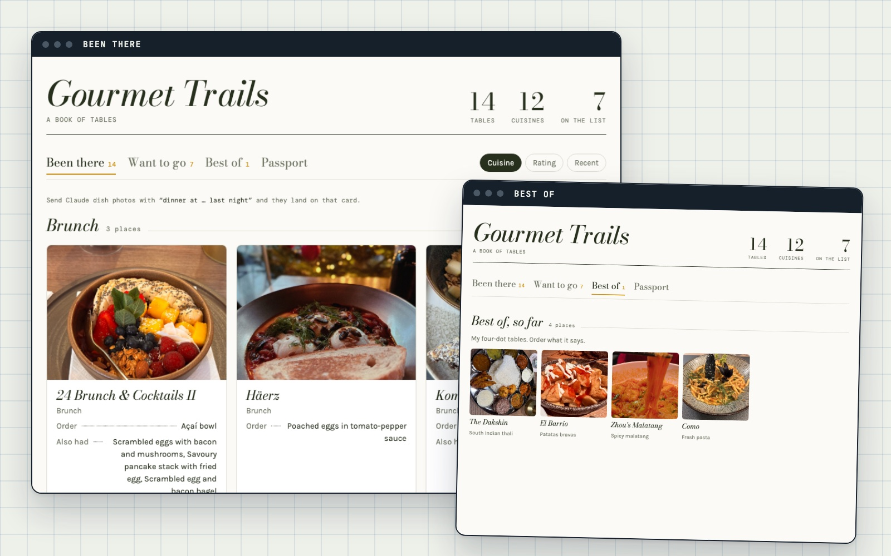

Exp. 004 · Build
Read the skills on GitHub →
I gave Claude my food photos
1,943 food photos and not one restaurant name. Now each meal is named and dated from the photo, with a wishlist and lists I can send a friend.
Claude plugin6 skillsLive
/plugin install gourmet-trails@benchlog